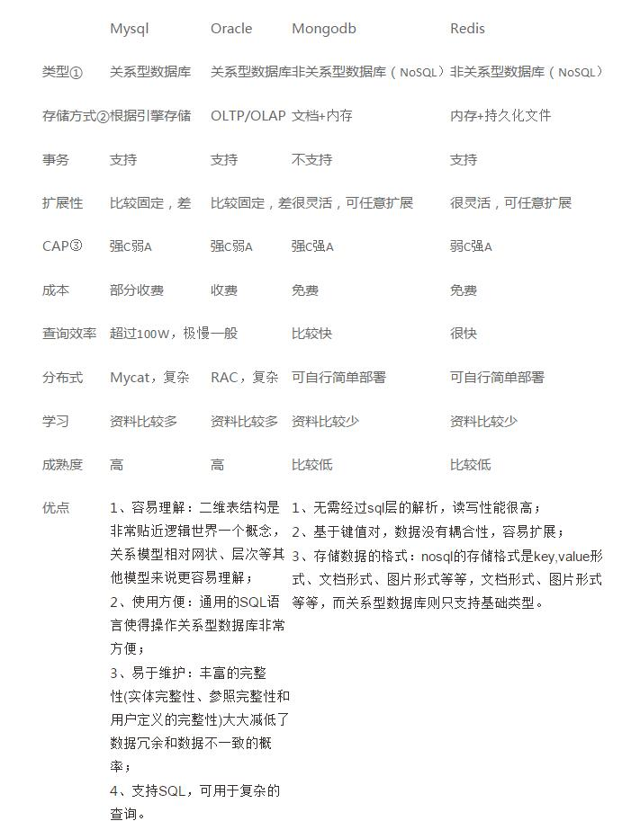

大学时学过关系型数据库，研究生时期自己研究过非关系型数据库，但是时间长远，几乎已经忘得一干二净了，现在工作中需要，重新整理学习一下数据库相关知识。
数据库分类
关系型数据库
关系型数据库(Relational Database management System)的特点是：
1.数据以表格的形式出现
2.每行为各种记录的名称
3.每列为记录名称所对应的数据域
4.许多的行和列组成一张表单
5.若干表单组成database
6.主要被用于执行小而读写频繁，或者大批量极少写访问的事物。
常用的关系型数据库有：MySQL, Micrrosoft Access, SQL Server, Oracle
非关系型数据库
非关系型数据库对应关系型数据库，是基于Key/Value . 常用的非关系型数据库有：Mongodb, Redis.

由于工作需要，下面将重点学习关系型数据库的MySQL.
什么是MySQL
MySQL 是一个关系型数据库管理系统，由瑞典MySQL AB公司开发，目前属于Oracle公司。MySQL是一种关联数据库管理系统，关联数据库将数据保存在不同的表中，而不是将所有数据放在一个大仓库中，这样就增加了速度并提高了灵活性。
- MySQL是开源的，所以你不需要支付额外的费用。
- MySQL支持大型的数据库。可以处理拥有上千万条记录的大型数据库。
- MySQL使用标准的SQL数据语言形式,提供TCP/IP、ODBC和JDBC等多种数据库连接途径。。
- MySQL可以允许于多个系统上，并且支持多种语言。这些编程语言包括C、C++、Python、Java、Perl、PHP、Eiffel、Ruby和Tcl等。
- MySQLl对PHP有很好的支持，PHP是目前最流行的Web开发语言。
- MySQL支持大型数据库，支持5000万条记录的数据仓库，32位系统表文件最大可支持4GB，64位系统支持最大的表文件为8TB。
- MySQL是可以定制的，采用了GPL协议，你可以修改源码来开发自己的Mysql系统。
- 支持多线程，充分利用CPU资源，支持多用户。
MySQL版本
MySQL Community Server 社区版本，开源免费，但不提供官方技术支持。
MySQL Enterprise Edition 企业版本，需付费，可以试用30天。
MySQL Cluster 集群版，开源免费。可将几个MySQL Server封装成一个Server。
MySQL Cluster CGE 高级集群版，需付费。
MySQL Workbench（GUI TOOL）一款专为MySQL设计的ER/数据库建模工具。
参考文献：
[1] https://github.com/jaywcjlove/mysql-tutorial
[2] http://blog.csdn.net/u014803081/article/details/72898169